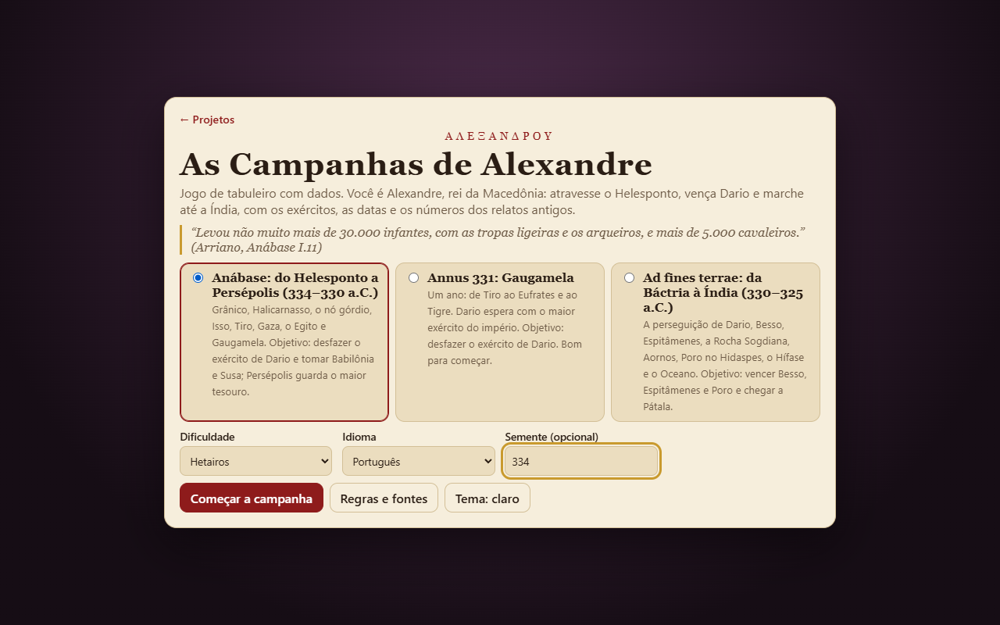
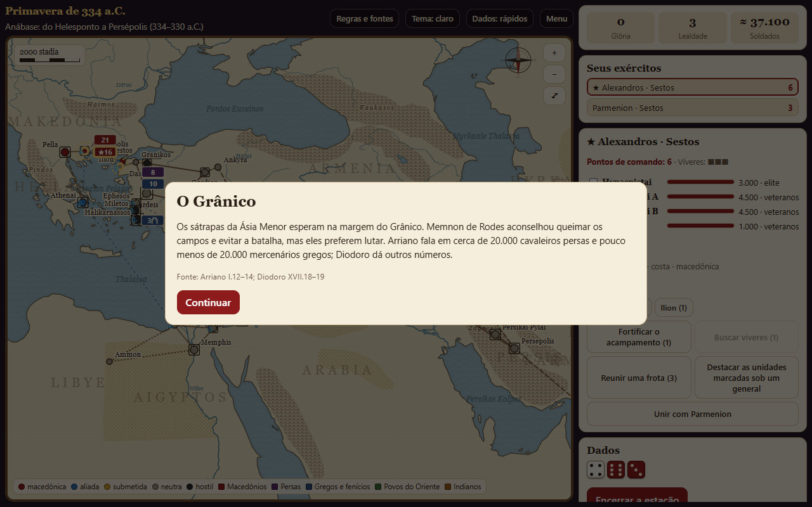
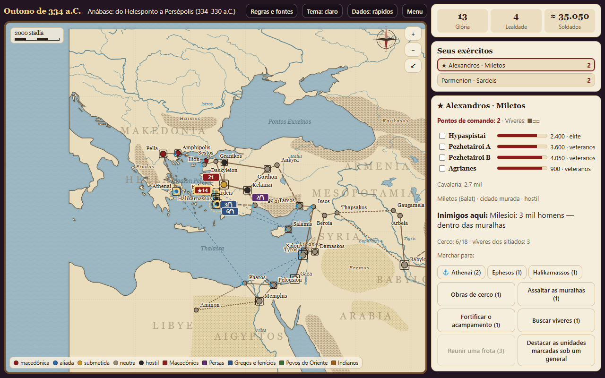

O jogo em um minuto
Você é Alexandre, rei da Macedônia. Comanda o exército num mapa que vai do Egeu à Índia, estação por estação, enquanto os inimigos aparecem nas datas e com os números que os autores antigos registram. Os dados decidem quanto seus exércitos conseguem fazer, quem vence as batalhas e se o mar deixa passar.
Para vencer, cumpra o objetivo do cenário: desfazer o exército de Dario, tomar Babilônia e Susa ou chegar ao Oceano. No caminho, junte Glória e não deixe a Lealdade do exército acabar: abaixo de −3, os macedônios se amotinam.
Jogar As Campanhas de Alexandre
↑ Voltar ao topoA história
Nenhum relato de quem acompanhou Alexandre chegou inteiro até nós. O mais usado é a Anábase de Arriano, escrita séculos depois a partir das memórias de Ptolomeu e de Aristobulo, dois oficiais do rei. Diodoro e Plutarco contam outras versões, e os números dos exércitos persas variam muito de um autor a outro.
Da Macedônia à Pérsia (334–330 a.C.)
- 334 — O Helesponto e o Grânico. Alexandre passa à Ásia com pouco mais de 30.000 infantes e mais de 5.000 cavaleiros. [1] Diodoro dá a lista: 12.000 macedônios, 7.000 aliados, 5.000 mercenários, 7.000 trácios e ilírios e 1.000 agrianos e arqueiros; as parcelas da cavalaria somam 5.100, embora o total dele seja 4.500. [2] No Grânico, Arriano conta cerca de 20.000 cavaleiros persas e pouco menos de 20.000 mercenários gregos. [1]
- 333 — Górdion e Isso. Em Górdion, Alexandre corta o nó do carro, ou, segundo Aristobulo, tira a cavilha do timão. Em Isso enfrenta o próprio Dario: Arriano fala em 600.000 homens, com 30.000 mercenários gregos e 60.000 cárdacos. [1]
- 332 — Tiro e Gaza. Tiro fica numa ilha; Alexandre constrói um molhe e reúne navios fenícios e cipriotas. No fim, cerca de 8.000 tírios morrem e 30.000 são vendidos. [1] Diodoro diz que o cerco durou sete meses. [2]
- 331 — Egito e Gaugamela. O sátrapa do Egito se entrega, Alexandre traça os limites de Alexandria e visita o oráculo de Amon. Em Gaugamela, Arriano dá a Dario 40.000 cavaleiros, 1.000.000 de infantes, 200 carros com foices e 15 elefantes; a Alexandre, 7.000 cavaleiros e cerca de 40.000 infantes. [1]
- 331–330 — Susa e Persépolis. Susa entrega 50.000 talentos; Ariobarzanes defende as Portas Pérsicas; Persépolis guarda 120.000 talentos. [1] [2] Dario é preso pelos próprios sátrapas e morre ferido. [1]
Báctria e Índia (330–325 a.C.)
- 329–328 — Sogdiana. Espitâmenes destrói a coluna de Farnuces no Politimeto: segundo Arriano, só 40 cavaleiros e 300 infantes escapam; Cúrcio fala em 2.000 infantes e 300 cavaleiros mortos. Na Rocha Sogdiana, 300 homens sobem de noite com cravos de ferro e cordas de linho; 30 morrem na subida. [1]
- 326 — O Hidaspes. Poro espera com 4.000 cavaleiros, 300 carros, 200 elefantes e 30.000 infantes. Vencido, recebe de volta o reino e mais terras. No Hífase, Ceno fala pelo exército cansado, e Alexandre decide voltar. [1]
- 325 — Os malos e a Gedrósia. Uma flecha atravessa a couraça de Alexandre e entra no peito. [1] Na volta pelo deserto, segundo Plutarco, nem a quarta parte do exército sobrevive. [3] Alexandre morre em 323, aos 32 anos e 8 meses. [1]
Primeiros passos

| Cenário | Duração | Objetivo |
|---|---|---|
| Annus 331: Gaugamela | 3 estações e o inverno | Desfazer o exército de Dario. Comece por aqui. |
| Anábase | 334 a 330 a.C. | Desfazer o exército de Dario e ter Babilônia e Susa submetidas ou aliadas. |
| Ad fines terrae | 330 a 325 a.C. | Vencer Besso, Espitâmenes e Poro e chegar ao Oceano em Pátala. |
- Dificuldade. Recruta dá um dado e um ponto de comando a mais aos macedônios; Somatophylax dá um dado a mais aos inimigos e os deixa mais ousados.
- Semente. O mesmo número repete os mesmos dados, desde que você dê as mesmas ordens na mesma ordem. Use 334 para seguir o exemplo deste tutorial.
- Salvamento. A campanha fica salva no navegador; o botão Continuar volta a ela.
O mapa e o painel

- Cidades. A cor diz a situação: vermelha, macedônica; azul, aliada; dourada, submetida; cinza, neutra; preta, hostil. O quadrado em volta indica muralhas, e quanto maior, mais forte. A âncora marca os portos.
- Estradas. Linhas cheias custam o número indicado; tracejadas longas atravessam montanhas; pontilhadas finas são desertos; pontilhadas curtas são grandes rios, que só se atravessam com ponte; pontilhadas azuis são rotas marítimas.
- Fichas. As vermelhas são seus exércitos: ★ marca Alexandre, e o número diz quantos milhares de homens há. As outras são inimigos; o símbolo de muralha indica que estão dentro da cidade.
- Painel. Mostra os pontos de comando do exército escolhido, os víveres (■■■), as unidades com os homens e a experiência, e os botões de ordens.
- Navegação. Arraste para mover o mapa, use a roda do mouse ou os botões + e − para o zoom e ⤢ para voltar à vista inicial. A escala em estádios áticos, de cerca de 185 m, acompanha o zoom.
O relevo, os rios e os litorais vêm do Natural Earth, e os nomes estão em grego transliterado. [4]
↑ Voltar ao topoUma estação, passo a passo
O ano tem três estações de campanha (primavera, verão e outono) e o inverno. Cada estação segue esta ordem:
- Týche. Um dado traz estradas ruins (−1 ponto para cada exército), comboios de víveres, guias (+1 ponto para Alexandre) ou bons presságios (+1 Lealdade).
- Comando. Cada exército rola um dado. Alexandre recebe 3 + metade do dado, arredondada para cima; um general, 1 + metade.
- Suas ordens. Escolha um exército e gaste os pontos:
| Ordem | Custo | Para quê |
|---|---|---|
| Marchar | 1 a 3 | Ir a uma cidade vizinha. Se houver inimigos em campo, há batalha. |
| Navegar | 1 a 3 | Ir de um porto a outro. Pode haver tempestade e, até a queda de Tiro, a frota persa. |
| Fortificar o acampamento | 1 | +3 dados se for atacado, até sair do lugar. |
| Buscar víveres | 1 | Recupera os víveres se o dado ajudar. |
| Obras de cerco / Assaltar | 1 | Contra inimigos atrás de muralhas. |
| Exigir submissão | 1 | Submete uma cidade neutra ou hostil sem inimigos. |
| Ponte de barcos | 2 | Abre a travessia de um grande rio a partir desta margem. |
| Reunir uma frota | 3 | Num porto amigo; permite cercar Tiro e navegar pelo Oceano. |
| Fundar uma Alexandria | 2 | Só Alexandre, em seis lugares; a cidade vira aliada e dá Glória. |
| Destacar / Unir | 0 | Divide as unidades sob um general ou junta dois exércitos. |
- Encerrar a estação (botão ou tecla E). Os inimigos agem: exércitos de campo atacam quando se acham mais fortes, guarnições ficam atrás das muralhas, e Dario e Besso evitam batalhas desiguais.
- Víveres. Exércitos em terra macedônica, aliada ou submetida se reabastecem; os outros gastam víveres. Os sitiados consomem os deles.
Eventos e façanhas

Os inimigos entram no jogo nas datas dos relatos: os sátrapas no Grânico na primavera de 334, Memnon em Halicarnasso no verão, Dario perto de Isso em 333, Tiro e Gaza em 332, o exército real em Babilônia em 331. [1] O jogo usa forças persas bem menores que as de Arriano, para que a partida seja jogável.
Algumas façanhas dão Glória quando você chega ao lugar: Ílion e o Helesponto, o nó de Górdion (também +1 Lealdade), o oráculo de Amon (+4), a travessia do Iaxartes, o Hífase e o Oceano em Pátala. Os tesouros de Susa e Persépolis dão Lealdade. Contra Espitâmenes, um exército acampado pode ter de escolher entre ficar ou persegui-lo: perseguir dá a ele a vantagem da emboscada, como aconteceu a Farnuces. [1]
↑ Voltar ao topoCercos e assaltos

Inimigos dentro de muralhas não lutam em campo. Você tem dois caminhos:
- Obras de cerco. Cada ordem soma um dado + metade do número de unidades (+2 com Alexandre). A cidade cai quando o total chega a 6 vezes a fortificação: 18 em Mileto, 24 em Halicarnasso, Tiro e Gaza. A cada estação, os sitiados gastam um ponto de víveres; sem víveres, rendem-se.
- Assalto. É uma batalha em que o defensor ganha dados pelas muralhas (fortificação + 1). É rápido, mas custa homens.
Tiro fica numa ilha: só um exército com frota consegue cercá-la. Reúna os navios num porto amigo, como Sídon, como Alexandre fez com os navios fenícios e cipriotas. [1] Com a queda de Tiro, a frota persa deixa de ameaçar as travessias.
↑ Voltar ao topoAs batalhas

- Força de combate. Cada 480 homens valem 1 ponto (veteranos 1,35; elite 1,7). Mil cavaleiros macedônios valem 1. Mil guerreiros persas valem 0,6 vezes a qualidade deles; mil hoplitas mercenários valem 2.
- Dados. Um dado para cada 7 pontos, mais os modificadores: terreno do defensor (monte +2), muralhas, acampamento (+3), cavalaria superior (+1), Alexandre (+1), fome (−2), emboscada (+3 na primeira rodada), carros com foices (+1) e elefantes (+4).
- Acertos. Tropas veteranas acertam com 4 a 6; novatos e a maioria dos inimigos, com 5 ou 6. Cada acerto tira 3 pontos de força.
- Moral. Depois de cada rodada, quem sofreu mais rola 2d6. Acima do valor de moral, foge, e a cavalaria do vencedor persegue. Alexandre pode reanimar a linha uma vez por batalha.
- Fim. Depois de três rodadas sem fuga, a batalha empata. Se o exército de Alexandre foge, há 1 chance em 12 de ele morrer.
Víveres e inverno
Cada exército tem até 3 de víveres. Fora de terra amiga, perde 1 por estação; com 0, perde homens por fome e deserção e luta com 2 dados a menos. Atravessar um deserto custa víveres e homens, e o da Gedrósia custa muito mais.
- Exércitos em quartéis amigos recuperam 1 companhia por unidade; fora deles, perdem 2.
- Unidades que venceram no ano podem passar de novatas a veteranas e de veteranas a elite.
- As vitórias do ano rendem até 3 de Lealdade. Completar uma unidade custa 1; receber uma nova, 3.
- Cidades submetidas sem tropa podem se revoltar, sobretudo na Báctria e na Sogdiana em 329 e 328 a.C.
Sua primeira campanha: o ano 334
Comece o cenário Anábase com a semente 334 e a dificuldade Hetairos. As telas deste tutorial são dessa partida, jogada por cliques reais; dando as mesmas ordens na mesma ordem, você verá os mesmos dados. [5]
- Leia a situação. Alexandre está em Sestos com hipaspistas (elite), duas unidades de falange e os agrianos: 13.000 infantes e 2.700 cavaleiros, e 6 pontos de comando. Parmênio tem 19.000 aliados, mercenários e trácios e 2.400 cavaleiros, e 3 pontos. No Grânico esperam os sátrapas (8.000 infantes e 12.000 cavaleiros) e 10.000 mercenários.
- Atravesse o Helesponto. Escolha Alexandre e marche para Ílion (1 ponto): a travessia e a visita a Ílion valem 2 de Glória.
- O Grânico. Marche para o Grânico (1 ponto). A batalha contra os sátrapas começa sozinha: 7 dados contra 3, e eles fogem na primeira rodada, com 7.000 mortos. Você perde 2.050 homens. Use mais 1 ponto para Atacar os mercenários: vitória, com 10.000 mortos do lado deles. A Glória chega a 12.
- Traga Parmênio. Marche com ele de Sestos a Ílion e ao Grânico (2 pontos) e encerre a estação.
- Verão: Sardes. Leve Alexandre a Sardes (2 pontos) e exija a submissão (1): a cidade aceita. Siga para Éfeso (1). Mande Parmênio a Sardes (2), uma cidade agora submetida, e encerre a estação.
- Outono: Mileto. Alexandre marcha para Mileto (1) e dá uma ordem de cerco: +6, ou seja, 6 de 18. Com o ponto seguinte, assalte: a cidade cai, e a Glória vai a 18.
- Inverno. Alexandre em Mileto e Parmênio em Sardes estão em cidades submetidas e não perdem ninguém. As vitórias rendem 3 de Lealdade, que chega a 7. Num teste em que Parmênio passou o inverno em Éfeso, cidade neutra, ele perdeu 3.800 homens.
- Próximos passos. Halicarnasso, com Memnon e fortificação 4, pede 24 pontos de cerco. Em 333, leve Alexandre a Górdion antes de Dario chegar a Isso, no verão. Para Tiro, submeta Sídon e reúna a frota lá.
Táticas de batalha
Simulamos 4.000 batalhas para cada situação com o motor do jogo, na dificuldade Hetairos. A referência: um general com quatro unidades veteranas (21.000 infantes) e 2.000 cavaleiros ataca 75.000 persas com 8.000 cavaleiros numa planície. [5]
| Situação | Vitória | Derrota | Empate | Homens perdidos |
|---|---|---|---|---|
| Referência | 80,3% | 3,0% | 16,7% | 5.550 |
| Com Alexandre no comando | 87,8% | 0,1% | 12,2% | 5.450 |
| Seis unidades em vez de quatro | 98,1% | 0,5% | 1,5% | 5.040 |
| Unidades de elite | 93,3% | 0,9% | 5,9% | 4.270 |
| Unidades novatas | 38,5% | 25,7% | 35,8% | 9.630 |
| Cavalaria superior (6.000) | 82,5% | 1,6% | 15,9% | 4.870 |
| Inimigo num monte | 76,6% | 5,8% | 17,6% | 7.440 |
| Sem víveres | 63,3% | 10,9% | 25,8% | 6.150 |
| Atacado em campo aberto | 81,9% | 2,6% | 15,4% | 5.490 |
| Atacado em acampamento fortificado | 96,2% | 0,5% | 3,3% | 5.150 |
| Inimigo com elefantes | 70,0% | 11,4% | 18,6% | 9.430 |
Leve Alexandre à batalha
A presença dele baixou as derrotas da referência de 3,0% para 0,1% e subiu a vitória para 87,8%.
Concentre as unidades
Seis unidades em vez de quatro: 98,1% de vitória. Dividir o exército só vale para cercos e para guardar cidades.
Não mande novatos sozinhos
Com unidades novatas, a vitória cai para 38,5%. Junte os reforços às unidades veteranas até que ganhem experiência.
Espere atrás da paliçada
Atacado num acampamento fortificado, o exército venceu 96,2% das vezes, contra 81,9% em campo aberto.
Respeite os elefantes
Os elefantes quase dobraram as perdas e levaram as derrotas a 11,4%. Contra Poro, leve o exército inteiro.
Situações históricas
| Situação | Vitória | Empate | Homens perdidos |
|---|---|---|---|
| Grânico: Alexandre e as quatro unidades dele contra os sátrapas | 99,8% | 0,2% | 1.740 |
| Isso: o exército de 334 inteiro contra Dario com 90.000 | 66,4% | 33,0% | 8.750 |
| Gaugamela: 40.000 infantes e 7.000 cavaleiros contra 150.000 e os carros | 53,2% | 46,5% | 12.630 |
| Hidaspes: Alexandre com 14.000 infantes contra Poro e os elefantes | 98,7% | 1,3% | 4.990 |
São modelos do jogo, não da história. Medem as regras: em Gaugamela, quase metade das batalhas termina empatada, e o exército de Dario volta a crescer enquanto está na Mesopotâmia. Vença cedo ou vença de novo.
↑ Voltar ao topoEstratégias de campanha
- Mantenha Alexandre com o exército principal. Ele dá mais pontos de comando, um dado a mais e a nova rolagem de moral.
- Termine cada estação em terra amiga ou busque víveres antes, e exija a submissão das cidades onde vai passar o inverno.
- Pule os desvios quando o tempo apertar. Amon vale 4 de Glória, mas a ida e a volta pelo deserto custam quase um ano.
- Prepare as pontes antes. No Eufrates, no Oxo, no Iaxartes, no Indo e no Hidaspes, a ponte custa 2 pontos numa das margens; faça-a com um general enquanto Alexandre chega.
- Desfaça Dario cedo. Ele recebe reforços enquanto está na Mesopotâmia; o objetivo pede deixá-lo com menos de 30% do máximo que teve.
- Guarde Lealdade. Cada unidade aniquilada custa 2, e os saques em cidades aliadas custam 1.
- Funde Alexandrias. Cada uma vira cidade aliada, onde o exército se abastece e inverna sem perdas.
Erros comuns
- Invernar em terra neutra. No exemplo, isso custou 3.800 homens a Parmênio.
- Ir a Tiro sem frota. O cerco não avança enquanto a cidade se abastece pelo mar.
- Chegar ao rio sem ponte. A travessia de um grande rio só aparece depois da ponte.
- Atacar Dario com metade do exército. Numa simulação de 2.000 batalhas em Gaugamela, só Alexandre e as unidades dele venceram 31,8% das vezes; o exército inteiro, 53,2% em 4.000.
- Atravessar a Gedrósia por terra sem necessidade. Pátala e Harmózia se ligam pelo Oceano para quem tem frota.
Glossário
- Agrianos
- Infantaria ligeira dos Bálcãs, usada por Alexandre nos terrenos difíceis.
- Companhia
- A décima parte de uma unidade no jogo.
- Companheiros (hetairoi)
- A cavalaria pesada macedônica, que Alexandre comandava.
- Estádio
- Medida grega de distância; o ático tinha cerca de 185 m.
- Hipaspistas
- Infantaria de elite que lutava ao lado da falange.
- Lealdade
- A disposição do exército a seguir o rei; paga reforços e acaba a campanha se cair abaixo de −3.
- Pezhetairoi
- Os infantes da falange macedônica, armados com a sarissa.
- Sátrapa
- Governador de uma província do império persa.
- Talento
- Unidade de peso usada para medir prata e ouro.
- Týche
- A sorte, para os gregos; no jogo, o dado do começo de cada estação.
Revisão rápida
Em resumo
- Cada estação: Týche, pontos de comando, suas ordens, os inimigos, os víveres.
- Batalhas: um dado a cada 7 pontos de força; veteranos acertam com 4+; depois, moral com 2d6.
- Cercos poupam homens; assaltos poupam tempo. Tiro só cai para quem tem frota.
- Alexandre com o exército principal, unidades concentradas, acampamento fortificado.
- Termine as estações e o inverno em terra amiga.
1. O dado de comando de Alexandre deu 3. Quantos pontos ele tem?
5: 3 + metade do dado arredondada para cima (2).
2. Seu exército tem força 56. Quantos dados rola, sem modificadores?
8: um dado para cada 7 pontos.
3. Quanto o cerco precisa somar para tomar Halicarnasso, de fortificação 4?
24, 6 vezes a fortificação.
4. Por que o cerco de Tiro não avança?
Porque a cidade se abastece pelo mar. É preciso reunir uma frota num porto amigo, como Sídon.
5. Qual é a situação mais perigosa das medições?
Unidades novatas: só 38,5% de vitória e 25,7% de derrota.
6. O que acontece se a Lealdade cair abaixo de −3?
Os macedônios se amotinam, e a campanha termina.
Jogar As Campanhas de Alexandre
↑ Voltar ao topoReferências
- Arriano. The Anabasis of Alexander, tradução de E. J. Chinnock (1884), em Wikisource. Exército (I.11), Grânico (I.12–14), Memnon (I.20), Górdion (II.3), Isso (II.8), Tiro (II.20–24), Gaza (II.26), Egito e Amon (III.1–4), eclipse e Gaugamela (III.7–15), Susa (III.16), Portas Pérsicas (III.18), Dario (III.21), Sogdiana (IV.1–6, IV.18–19), Aornos (IV.28), Hidaspes (V.15–19), Hífase (V.25–28), frota (VI.2), malos (VI.10), morte (VII.28). As notas de Chinnock citam Cúrcio.
- Diodoro Sículo. Biblioteca histórica, livro XVII, em LacusCurtius. Exército (17), Tiro (46), Persépolis (71).
- Plutarco. Vida de Alexandre, tradução de B. Perrin, em LacusCurtius. Gedrósia (66).
- Natural Earth. naturalearthdata.com. Terra, lagos, rios e cordilheiras, em domínio público. Os litorais são os atuais.
- Medições próprias com o motor do jogo As Campanhas de Alexandre: a partida das telas (semente 334) e 4.000 batalhas simuladas por situação. Medem as regras do jogo, não a história.